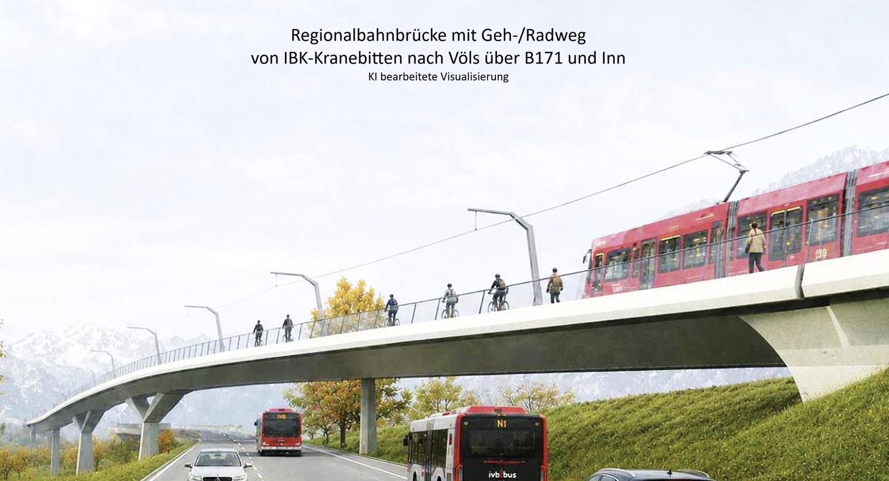
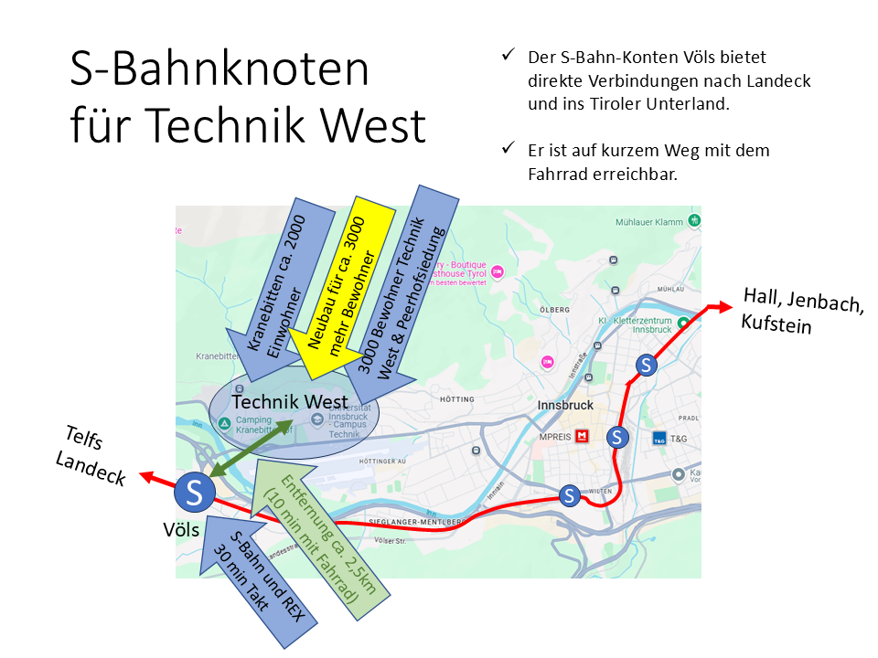
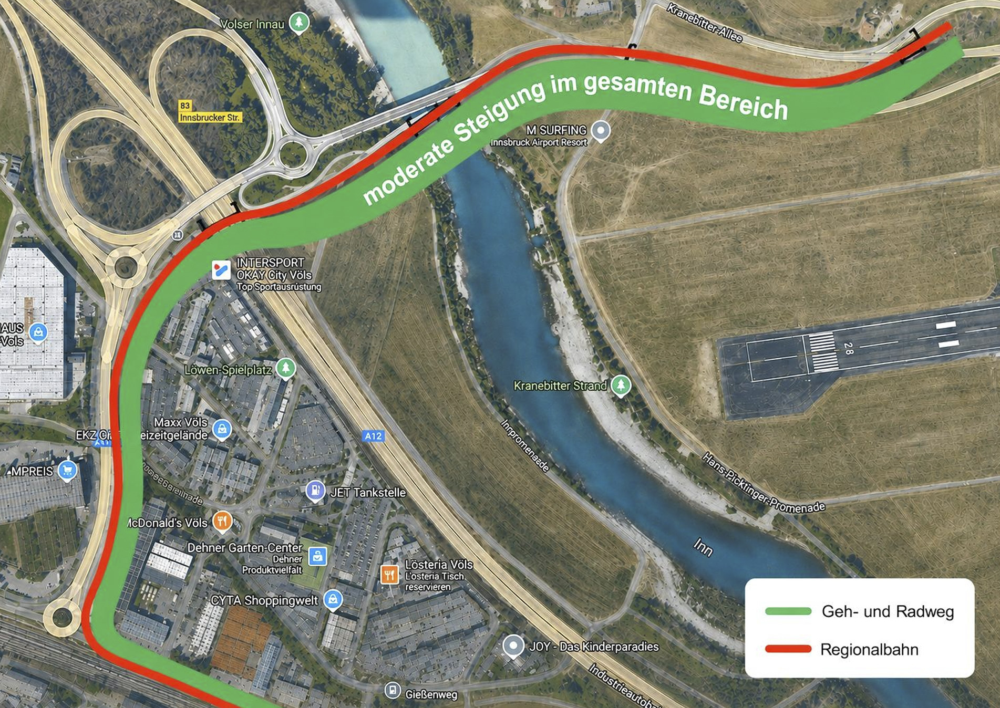
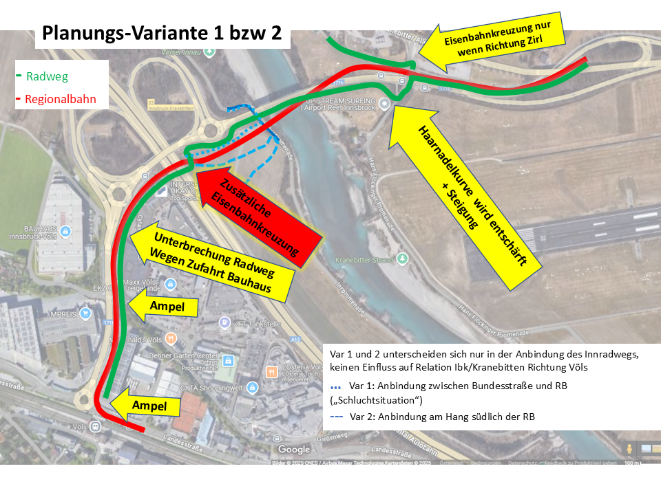

Schwerpunkt — laufend
Geh- und Radweg: Innsbruck West <-> Völs
Nach intensiven Bemühungen des Radstammtisch Völs ist ein wichtiger Meilenstein erreicht: Im Oktober 2026 haben beide Gemeinden grünes Licht für Variante 3 gegeben! Damit entsteht gemeinsam mit der Regionalbahn eine sichere, attraktive und weitgehend kreuzungsfreie Geh- und Radwegverbindung zwischen Völs und Innsbruck.
- Hauptstrecke
- Völs ↔ Kranbitten/Technik
- Verkehrsaufkommen
- Hoch bis zu 2000 Radfahrer*innen/Tag
- Gefährliche Kreuzungen
- 2
- Unzumutbare Steigungen
- 3
- Gefährliche Kurven
- 1
- Geplanter Baubeginn
- 2027/2028
- Voraussichtliche Fertigstellung
- 2032

Bedeutung
Der Weg zwischen Innsbruck West und Völs Bahnhof ist ein vielbefahrener Radweg. Er bindet die die westlichen Stadtteile von Innsbruck an:
- den Bahnknotenpunkt Völs - Schüler, Pendler von und nach Innsbruck
- Inntalradweg
- geplante Kletterhalle bei FlipLab
- Völs EKZ Cyta
- Völser Siedlungsgebiete südlich der Bahn
Künftig ist eine weiter steigende Bedeutung durch geplanten neuen Stadtteil „Harterhof-Siedlung“ (zusätzlich ca. 1500 Wohnungen und ca. 700 Arbeitsplätze) zu erwarten. Derzeit ist die Strecke zwischen Bahnhof Völs und Innsbruck Kranebitten ca. 1km lang (5min mit Fahrrad).

Die neue Verbindung – Variante 3
Eine deutliche Verbesserung für alle, die zu Fuß oder mit dem Fahrrad zwischen Völs und Innsbruck unterwegs sind!
Die beschlossene Variante 3 führt den Geh- und Radweg gemeinsam mit der Regionalbahn über die neuen Brücken über Inn und Autobahn.
Die wichtigsten Verbesserungen
- ✅ 3,5 Meter breiter Geh- und Radweg – mehr Platz für Begegnungsverkehr
- ✅ Keine zusätzliche Schrankenanlage auf der Hauptverbindung Völs–Innsbruck
- ✅ Geringere Steigungen und großzügigere Kurvenradien – die gefährliche Haarnadelkurve entfällt
- ✅ Durchgehende Beleuchtung – auch im bisher unbeleuchteten Abschnitt
- ✅ Direkter Zugang zur Bushaltestelle Cyta Nord – ohne zusätzlichen Umweg und ohne beschrankten Bahnübergang
- ✅ Kreuzungsfreie Anbindung an den Innradweg
- ✅ Einfacherer Winterdienst durch eine breitere und geradlinigere Wegführung
Damit werden zahlreiche Schwachstellen der bisherigen Verbindung dauerhaft beseitigt.

Von der Planung zum Beschluss
2023 – Erste Planungen Die ursprüngliche Regionalbahnplanung hätte zusätzliche Schrankenanlagen und bestehende Schwachstellen des Geh- und Radwegs mit sich gebracht.
Jänner 2025 – Einsatz für Verbesserte Variante In zahlreichen Gesprächen mit Land Tirol, IVB und beiden Gemeinden setzte sich der Radstammtisch Völs für eine bessere Lösung ("Variante 3")ein.
Oktober 2026 – Grünes Licht! Nach dem einstimmigen Beschluss in Innsbruck stimmte am 21. Oktober 2026 auch der Völser Gemeinderat der Vereinbarung mit den IVB zu. Damit ist die Variante 3 beschlossen!
Unser Engagement hat sich gelohnt!
Rund zwei Jahre Einsatz, konstruktive Gespräche und Überzeugungsarbeit haben sich ausgezahlt. Ein gemeinsamer Erfolg für eine sichere und attraktive Verbindung zwischen Völs und Innsbruck!
Die bisherigen Planungsvarianten im Vergleich
Die ursprünglichen Planungen zeigen deutlich, warum wir uns für Variante 3 eingesetzt haben.
IVB Variante 1 und 2 – ursprüngliche Planung
- ❌ Zusätzlicher beschrankter Bahnübergang auf der Geh- und Radwegverbindung
- ❌ Enge Kurven und starke Steigungen bleiben bestehen
- ❌ Keine durchgehende Beleuchtung
- ❌ Erschwerter Zugang zur Bushaltestelle Cyta Nord
- ❌ Aufwändigerer Winterdienst

IVB Variante 3 – beschlossen!
- ✅ Gemeinsame Trassenführung mit der Regionalbahn über Inn und Autobahn
- ✅ Keine zusätzliche Schrankenanlage auf der Hauptverbindung
- ✅ Durchgehend 3,5 Meter breiter Geh- und Radweg
- ✅ Geringere Steigungen und größere Kurvenradien
- ✅ Durchgehende Beleuchtung
- ✅ Direkte Anbindung an Cyta Nord und den Innradweg
Weitere Verbesserungen bleiben wichtig
Mit der neuen Brückenverbindung wird ein großer Teil der heutigen Schwachstellen beseitigt. Dennoch gibt es weitere Bereiche, für die wir uns einsetzen.
Entschärfung des Kreuzungsbereichs Bauhaus-Unterführung
Der Kreuzungsbereich bei der Zufahrt zur Bauhaus-Unterführung ist unübersichtlich. Besonders für Radfahrende aus Richtung Bauhaus bestehen durch schlechte Sichtverhältnisse, Steigungen und die Vorrangregelung Gefahren.
Auch hier braucht es eine sichere und übersichtliche Lösung.
[Bestehende Bilder der Bauhaus-Kreuzung beibehalten]
Verbesserung Verknüpfung mit anderen Verkehrsmitteln
Bahnhof Völs:
- Schaffung ausreichender Abstellplätze - auch auf der Nordseite
- Schaffung IVB-Stadtrad-Stationen bei Bahnhof Völs und Cyta
Direkte Anbindung Völs Seesiedlung
Eine sichere und direkte Anbindung der Völser Siedlungsgebiete südlich der Bahn bleibt ein wichtiges Anliegen. Derzeit erfordert die Verbindung teilweise gefährliche Straßenquerungen oder größere Umwege über die Kranebitterstraße.
Wir setzen uns daher weiterhin für eine sichere Radunterführung im Bereich des Bahnhofs Völs ein. --> https://radstammtisch.voels.org/schwerpunkte/unterfuehrung-landesstrasse-omv/